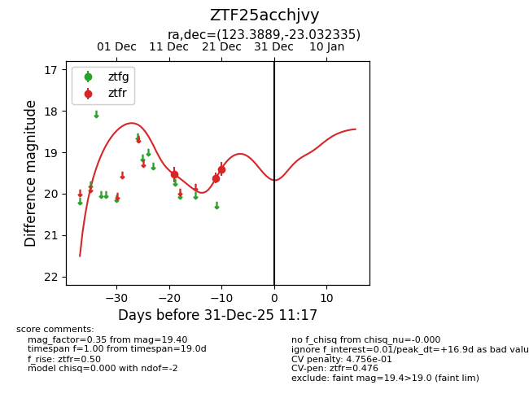
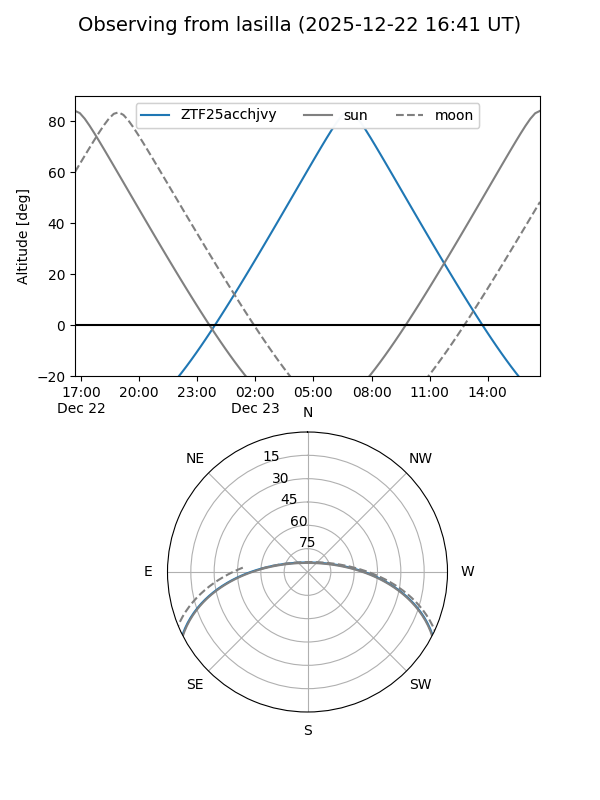
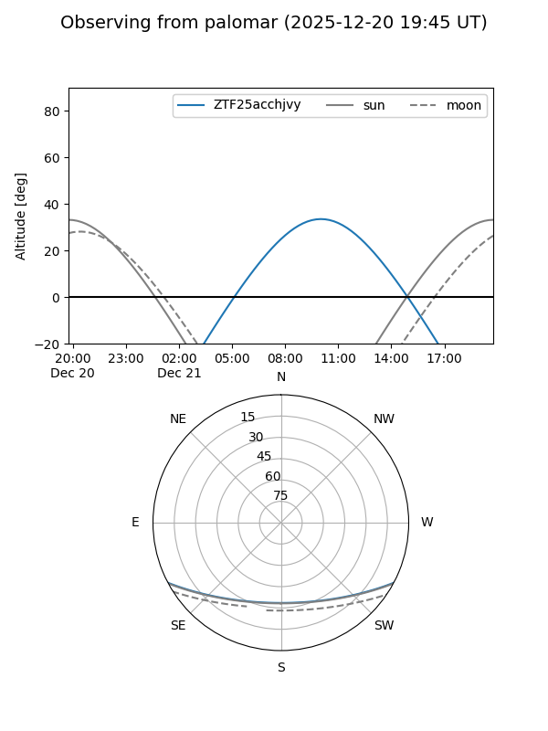
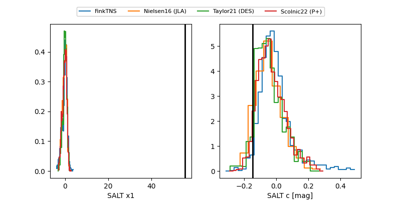

ZTF25acchjvy
Target ZTF25acchjvy at 2025-12-21 10:57
Aliases and brokers:
FINK: fink-portal.org/ZTF25acchjvy
Lasair: lasair-ztf.lsst.ac.uk/objects/ZTF25acchjvy
ALeRCE: alerce.online/object/ZTF25acchjvy
alt names
ZTF25acchjvy (ztf,fink_ztf)
Coordinates:
equatorial (ra, dec) = 123.3889,-23.03233
equatorial (HMS+DMS) = 08:13:33.33,-23:01:56.41
galactic (l, b) = (242.8214,+6.24753)
Flags:
likely cv
Photometry:
last ztfr=19.40
3 ztfr detections
Lightcurve

Visibility


Additional plots
